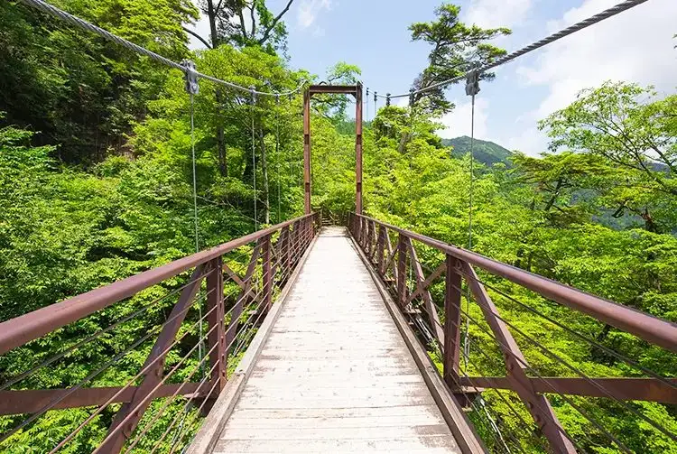

Hinohara, Tokyo: things to do, food and stays
Hinohara · Tokyo
Hinohara
Highlighted on the Tokyo map.

Sights

Dining
Tachibana Ya
たちばな家

Noodle restaurant in Hinohara, Tokyo.
Kazuma no Yu
数馬の湯

Cafe in Hinohara, Tokyo.
Miyama
深山

Noodle restaurant in Hinohara, Tokyo.
Tanagokoro
たなごころ

Cafe in Hinohara, Tokyo.
Genan Hinohara
玄庵 檜原

Noodle restaurant in Hinohara, Tokyo.
Tochi no Mi
とちの実

Noodle restaurant in Hinohara, Tokyo.
Hatano
はたの

Noodle restaurant in Hinohara, Tokyo.
Sengen Zaka Moku An Reservation
浅間坂 木庵

Noodle restaurant in Hinohara, Tokyo.
Harenoya
古民家カフェ 晴ノ舎

Cafe in Hinohara, Tokyo.
Kanko Ryokan Mitou Sansou
観光旅館 三頭山荘

Restaurant in Hinohara, Tokyo.
Mori no Pu
森の風゜

Sweets and bakery shop in Hinohara, Tokyo.
Yama Gohan Cafe Hinohara Terrace
山ごはんカフェ ヒノハラテラス

Cafe in Hinohara, Tokyo.
Hinohara Togei Kan Gallery Kissa Yamabiko
ひのはら陶芸館 ギャラリー・喫茶 やまびこ

Cafe in Hinohara, Tokyo.
Hinohara Tofu Chitoseya
檜原とうふ ちとせ屋

Restaurant in Hinohara, Tokyo.
villa delpino
ヴィッラ デルピーノ

European restaurant in Hinohara, Tokyo.
Kabuto Ya Ryokan
兜家旅館

Restaurant in Hinohara, Tokyo.
Cafe Seseragi
カフェ せせらぎ

Cafe in Hinohara, Tokyo.
Ja no Yu Onsen Takara So
蛇の湯温泉 たから荘

Restaurant in Hinohara, Tokyo.
Tomin no Mori Tochinomi Shop
都民の森とちのみ売店

Restaurant in Hinohara, Tokyo.
Kandzukuri So
かんづくり荘

Restaurant in Hinohara, Tokyo.
Hinohara Shiki no Sato
ひのはら四季の里

Japanese restaurant in Hinohara, Tokyo.
Satoyama Shokudo
さとやま食堂

Cafe in Hinohara, Tokyo.
Mori no Uta
もりのうた

Cafe in Hinohara, Tokyo.
Tokyo × Mountain Riverside Cafe
東京×山リバーサイドカフェ

Cafe in Hinohara, Tokyo.
Kaabee Ya
かあべえ屋

Restaurant in Hinohara, Tokyo.
Hinohara Factory
ひのはらファクトリー

Restaurant in Hinohara, Tokyo.
Cafe Kanakana
カフェかなかな

Cafe in Hinohara, Tokyo.
Sabou Henbori
茶房 へんぼり

Cafe in Hinohara, Tokyo.
Hinojaga Kun no Jaga Burger
ひのじゃが君のじゃがバーガー

Restaurant in Hinohara, Tokyo.
Kobe Kokusai Masu Tsuriba
神戸国際マス釣場

Restaurant in Hinohara, Tokyo.
Yamabuki Ya
やまぶき屋

Cafe in Hinohara, Tokyo.
Miik COFFEE ROASTERY

Cafe in Hinohara, Tokyo.
Oneya
御根家

Cafe in Hinohara, Tokyo.
Yama no Mise
山の店

Restaurant in Hinohara, Tokyo.
Trout Farm Akigawa
トラウトファーム秋川

Restaurant in Hinohara, Tokyo.
Inoue Shokuhin
井上食品

Japanese restaurant in Hinohara, Tokyo.